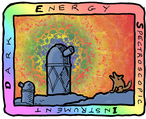

Job Description — B. A. Weaver
I work for NSF's National Optical-Infrared Astronomy Research Laboratory (NOIRLab). NOIRLab operates Kitt Peak National Observatory (KPNO) which is south-west of Tucson, AZ. My primary project at NOIRLab is the Dark Energy Spectroscopic Instrument (DESI). DESI is attached to the Mayall 4-meter telescope at Kitt Peak. NOIRLab is primarily funded by the National Science Foundation (NSF). DESI is primarily funded by the Department of Energy (DOE), but is also includes many academic institutions in the United States and world-wide. In this partnership, NOIRLab provides and operates the telescope, while DESI collects and measures the light that hits the telescope.
The goal of DESI is to measure the distance to a large number (30–50 million) of distant galaxies. Since we already know the position of these galaxies on the sky from images, measuring the distance results in a 3-dimensional map. This map provides a way to measure both the effective size and expansion rate of the Universe at many diferent times in the past. In particular, the expansion rate has changed over time, and at the present time the expansion rate is increasing (accelerating). We want to find the time in the distant past when this started happening.
Whatever is causing the expansion rate to increase, that is what we call “Dark Energy”. It is not possible to directly see Dark Energy, but it is possible to measure its effects. We hope that by measuring these effects in detail, we can deduce the nature of Dark Energy.
